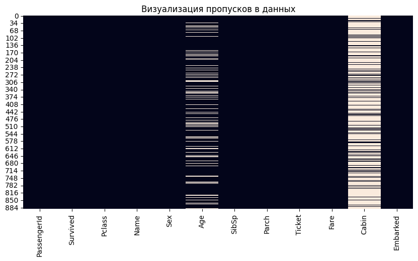
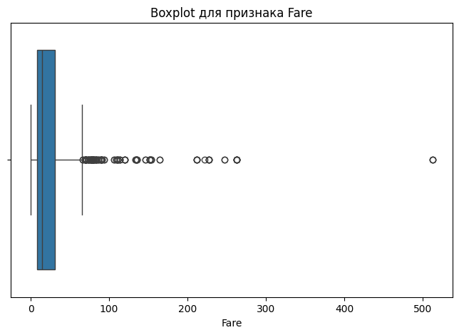
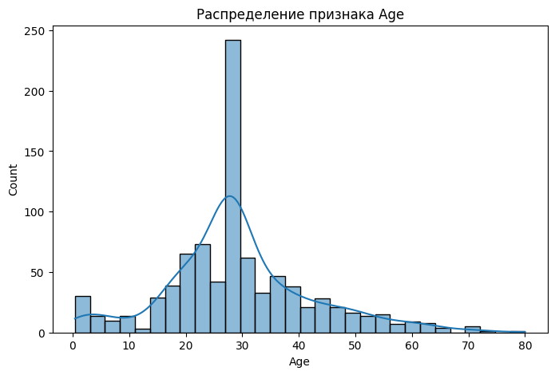
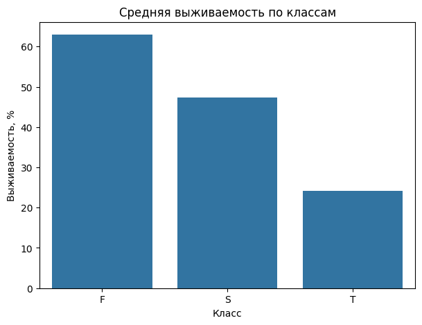
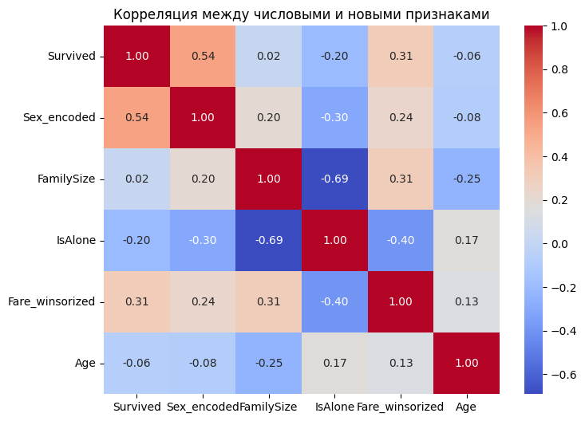

Лабораторная работа 6: Очистка и трансформация данных. pandas
Цели
- Освоить основные методы очистки данных с использованием библиотеки pandas.
- Изучить способы обработки пропущенных значений, выбросов и категориальных признаков.
- Научиться выполнять трансформацию данных и создавать новые признаки на основе существующих.
- Провести первичный анализ реального набора данных и подготовить его к дальнейшему использованию.
Задачи
В рамках лабораторной работы требовалось:
- загрузить данные из CSV-файла
- выполнить первичный анализ датафрейма
- определить типы данных и количество пропусков
- получить статистические характеристики числовых и категориальных признаков
- построить визуализации распределений и пропущенных значений
- обработать пропуски в столбцах
Age,EmbarkedиCabin - преобразовать типы данных и создать новые признаки
- выявить выбросы с помощью IQR-метода
- применить winsorization для обработки экстремальных значений
- выполнить агрегацию данных и построить сводные таблицы
- вычислить метрики качества очистки данных
- сохранить очищенный датафрейм в новый CSV-файл
Ход работы
1. Описание набора данных
В качестве исходных данных использовался датасет Titanic с платформы Kaggle. Набор данных содержит информацию о пассажирах корабля Titanic и используется для анализа факторов, связанных с выживаемостью пассажиров.
В работе использовался файл train.csv, так как он содержит целевой признак Survived, показывающий, выжил пассажир или нет.
Структура данных:
| Признак | Описание |
|---|---|
PassengerId |
идентификатор пассажира |
Survived |
факт выживания: 0 — не выжил, 1 — выжил |
Pclass |
класс билета |
Name |
имя пассажира |
Sex |
пол пассажира |
Age |
возраст пассажира |
SibSp |
количество братьев, сестер или супругов на борту |
Parch |
количество родителей или детей на борту |
Ticket |
номер билета |
Fare |
стоимость билета |
Cabin |
номер каюты |
Embarked |
порт посадки |
Для загрузки данных использовалась библиотека pandas:
df = pd.read_csv("train.csv")
После загрузки были выведены первые 10 строк датафрейма:
df.head(10)
Исходный датафрейм содержит 891 строку и 12 столбцов:
df.shape
Результат:
| Количество строк | Количество столбцов |
|---|---|
| 891 | 12 |
2. Первичный анализ данных
На первом этапе была выполнена проверка структуры датафрейма с помощью метода info():
df.info()
В результате были получены следующие типы данных:
| Столбец | Тип данных | Количество непустых значений |
|---|---|---|
PassengerId |
int64 |
891 |
Survived |
int64 |
891 |
Pclass |
int64 |
891 |
Name |
object |
891 |
Sex |
object |
891 |
Age |
float64 |
714 |
SibSp |
int64 |
891 |
Parch |
int64 |
891 |
Ticket |
object |
891 |
Fare |
float64 |
891 |
Cabin |
object |
204 |
Embarked |
object |
889 |
По результатам анализа видно, что в некоторых признаках есть пропущенные значения. Для более точной оценки была построена таблица пропусков:
missing_table = pd.DataFrame({
"missing_count": df.isnull().sum(),
"missing_percent": df.isnull().mean() * 100
})
missing_table.sort_values(by="missing_count", ascending=False)
Результат:
| Столбец | Количество пропусков | Процент пропусков |
|---|---|---|
Cabin |
687 | 77.10% |
Age |
177 | 19.87% |
Embarked |
2 | 0.22% |
PassengerId |
0 | 0.00% |
Name |
0 | 0.00% |
Pclass |
0 | 0.00% |
Survived |
0 | 0.00% |
Sex |
0 | 0.00% |
Parch |
0 | 0.00% |
SibSp |
0 | 0.00% |
Fare |
0 | 0.00% |
Ticket |
0 | 0.00% |
Наибольшее количество пропусков было обнаружено в столбце Cabin. Также значительное количество пропусков есть в признаке Age. В столбце Embarked отсутствуют только 2 значения.
Для числовых признаков были рассчитаны статистические характеристики:
df.describe()
Результат:
| Признак | count | mean | std | min | 25% | 50% | 75% | max |
|---|---|---|---|---|---|---|---|---|
PassengerId |
891 | 446.00 | 257.35 | 1.00 | 223.50 | 446.00 | 668.50 | 891.00 |
Survived |
891 | 0.38 | 0.49 | 0.00 | 0.00 | 0.00 | 1.00 | 1.00 |
Pclass |
891 | 2.31 | 0.84 | 1.00 | 2.00 | 3.00 | 3.00 | 3.00 |
Age |
714 | 29.70 | 14.53 | 0.42 | 20.13 | 28.00 | 38.00 | 80.00 |
SibSp |
891 | 0.52 | 1.10 | 0.00 | 0.00 | 0.00 | 1.00 | 8.00 |
Parch |
891 | 0.38 | 0.81 | 0.00 | 0.00 | 0.00 | 0.00 | 6.00 |
Fare |
891 | 32.20 | 49.69 | 0.00 | 7.91 | 14.45 | 31.00 | 512.33 |
Также были рассчитаны характеристики категориальных признаков:
df.describe(include="object")
Результат:
| Признак | count | unique | top | freq |
|---|---|---|---|---|
Name |
891 | 891 | Dooley, Mr. Patrick |
1 |
Sex |
891 | 2 | male |
577 |
Ticket |
891 | 681 | 347082 |
7 |
Cabin |
204 | 147 | G6 |
4 |
Embarked |
889 | 3 | S |
644 |
Для анализа распределения числовых признаков были построены гистограммы:
df.hist(figsize=(14, 10), bins=20)
plt.tight_layout()
plt.show()

3. Визуализация пропусков
Для наглядного анализа пропущенных значений была построена тепловая карта. Она позволила увидеть, в каких столбцах и строках чаще всего отсутствуют данные.
plt.figure(figsize=(10, 5))
sns.heatmap(df.isnull(), cbar=False)
plt.title("Визуализация пропусков в данных")
plt.show()

По тепловой карте видно, что основной проблемный столбец — Cabin, так как в нем отсутствует большая часть значений. Также пропуски есть в столбце Age, но их существенно меньше. В столбце Embarked пропущено только 2 значения.
4. Обработка пропусков
Для дальнейшей работы была создана копия исходного датафрейма:
df_clean = df.copy()
Для столбца Age были рассчитаны среднее и медианное значения:
age_mean = df_clean["Age"].mean()
age_median = df_clean["Age"].median()
age_mean, age_median
| Показатель | Значение |
|---|---|
Среднее значение Age |
29.6991 |
Медианное значение Age |
28.0 |
Для заполнения пропусков было выбрано медианное значение:
df_clean["Age"] = df_clean["Age"].fillna(age_median)
Медиана была выбрана потому, что она менее чувствительна к выбросам, чем среднее значение.
После заполнения пропусков был создан новый признак Age_group, разделяющий пассажиров на возрастные группы:
def age_group(age):
if age < 13:
return "Child"
elif age < 18:
return "Teenager"
elif age < 60:
return "Adult"
else:
return "Senior"
df_clean["Age_group"] = df_clean["Age"].apply(age_group)
Распределение пассажиров по возрастным группам:
| Возрастная группа | Количество пассажиров |
|---|---|
Adult |
752 |
Child |
69 |
Teenager |
44 |
Senior |
26 |
Для столбца Embarked была найдена мода, то есть наиболее часто встречающееся значение:
embarked_mode = df_clean["Embarked"].mode()[0]
embarked_mode
Результат:
| Признак | Мода |
|---|---|
Embarked |
S |
Пропуски были заполнены значением S:
df_clean["Embarked"] = df_clean["Embarked"].fillna(embarked_mode)
После обработки количество пропусков в столбце Embarked стало равно нулю:
df_clean["Embarked"].isnull().sum()
Результат:
| Столбец | Количество пропусков после обработки |
|---|---|
Embarked |
0 |
Столбец Cabin содержал 687 пропусков, то есть около 77.1% всех строк. Поэтому простое заполнение пропусков модой или другим значением могло бы сильно исказить данные.
Вместо этого был создан новый признак CabinDeck, содержащий первую букву номера каюты:
df_clean["CabinDeck"] = df_clean["Cabin"].str[0]
df_clean["CabinDeck"] = df_clean["CabinDeck"].fillna("Unknown")
Для пассажиров, у которых каюта не была указана, было использовано значение Unknown. После создания нового признака исходный столбец Cabin был удален:
df_clean = df_clean.drop(columns=["Cabin"])
5. Трансформация данных
После обработки пропусков были выполнены преобразования типов данных и созданы новые признаки.
По ТЗ лабораторной работы признак Pclass нужно было преобразовать из числового формата в категориальный строковый формат:
| Исходное значение | Новое значение |
|---|---|
1 |
F |
2 |
S |
3 |
T |
Для этого использовался словарь соответствий:
pclass_map = {
1: "F",
2: "S",
3: "T"
}
df_clean["Pclass"] = df_clean["Pclass"].map(pclass_map)
df_clean["Pclass"] = df_clean["Pclass"].astype("category")
После преобразования признак Pclass стал категориальным.
Распределение пассажиров по классам после преобразования:
| Класс | Количество пассажиров |
|---|---|
T |
491 |
F |
216 |
S |
184 |
Из столбца Name был выделен новый признак Title, отражающий обращение к пассажиру: Mr, Mrs, Miss, Master и другие.
df_clean["Title"] = df_clean["Name"].str.extract(r",\s*([^\.]+)\.", expand=False)
Первоначальное распределение обращений:
| Обращение | Количество |
|---|---|
Mr |
517 |
Miss |
182 |
Mrs |
125 |
Master |
40 |
Dr |
7 |
Rev |
6 |
Col |
2 |
Mlle |
2 |
Major |
2 |
Ms |
1 |
Mme |
1 |
Don |
1 |
Lady |
1 |
Sir |
1 |
Capt |
1 |
the Countess |
1 |
Jonkheer |
1 |
Так как многие обращения встречались редко, они были объединены в категорию Rare:
common_titles = ["Mr", "Miss", "Mrs", "Master"]
df_clean["Title"] = df_clean["Title"].apply(
lambda x: x if x in common_titles else "Rare"
)
Распределение после объединения редких значений:
| Обращение | Количество |
|---|---|
Mr |
517 |
Miss |
182 |
Mrs |
125 |
Master |
40 |
Rare |
27 |
Для возможности дальнейшего численного анализа признак Sex был преобразован в числовой формат. Был создан новый столбец Sex_encoded:
| Исходное значение | Новое значение |
|---|---|
male |
0 |
female |
1 |
df_clean["Sex_encoded"] = df_clean["Sex"].map({
"male": 0,
"female": 1
})
Исходный столбец Sex был сохранен, так как он удобен для группировок и визуализаций.
На основе признаков SibSp и Parch был создан новый признак FamilySize, показывающий размер семьи пассажира на борту:
df_clean["FamilySize"] = df_clean["SibSp"] + df_clean["Parch"] + 1
Единица добавляется потому, что нужно учитывать самого пассажира.
Также был создан бинарный признак IsAlone, показывающий, путешествовал пассажир один или с семьей:
df_clean["IsAlone"] = (df_clean["FamilySize"] == 1).astype(int)
Распределение значений признака IsAlone:
Значение IsAlone |
Описание | Количество пассажиров |
|---|---|---|
1 |
пассажир путешествовал один | 537 |
0 |
пассажир путешествовал с семьей | 354 |
Пример полученных значений:
SibSp |
Parch |
FamilySize |
IsAlone |
|---|---|---|---|
| 1 | 0 | 2 | 0 |
| 1 | 0 | 2 | 0 |
| 0 | 0 | 1 | 1 |
| 1 | 0 | 2 | 0 |
| 0 | 0 | 1 | 1 |
| 0 | 0 | 1 | 1 |
| 0 | 0 | 1 | 1 |
| 3 | 1 | 5 | 0 |
| 0 | 2 | 3 | 0 |
| 1 | 0 | 2 | 0 |
6. Обработка выбросов
После обработки пропусков и создания новых признаков была выполнена проверка данных на наличие выбросов. В первую очередь рассматривался признак Fare, так как стоимость билета может сильно отличаться у пассажиров разных классов.
Для визуальной оценки выбросов был построен boxplot:
plt.figure(figsize=(8, 5))
sns.boxplot(x=df_clean["Fare"])
plt.title("Boxplot для признака Fare")
plt.xlabel("Fare")
plt.show()

По графику видно, что у признака Fare есть заметные выбросы: большая часть значений сосредоточена в нижнем диапазоне, но встречаются отдельные очень дорогие билеты.
Для формального определения выбросов был использован IQR-метод. Межквартильный размах рассчитывается как разница между третьим и первым квартилями:
q1 = df_clean["Fare"].quantile(0.25)
q3 = df_clean["Fare"].quantile(0.75)
iqr = q3 - q1
lower_bound = q1 - 1.5 * iqr
upper_bound = q3 + 1.5 * iqr
q1, q3, iqr, lower_bound, upper_bound
Результат вычислений:
| Показатель | Значение |
|---|---|
Первый квартиль Q1 |
7.9104 |
Третий квартиль Q3 |
31.0000 |
Межквартильный размах IQR |
23.0896 |
| Нижняя граница выбросов | -26.7240 |
| Верхняя граница выбросов | 65.6344 |
После этого были отобраны строки, где значение Fare выходит за рассчитанные границы:
fare_outliers = df_clean[
(df_clean["Fare"] < lower_bound) |
(df_clean["Fare"] > upper_bound)
]
fare_outliers.shape[0]
Количество найденных выбросов:
| Признак | Количество выбросов |
|---|---|
Fare |
116 |
Так как нижняя граница получилась отрицательной, а стоимость билета не может быть меньше нуля, фактически выбросы находятся только выше верхней границы.
Дополнительно было построено распределение признака Age:
plt.figure(figsize=(8, 5))
sns.histplot(df_clean["Age"], bins=30, kde=True)
plt.title("Распределение признака Age")
plt.xlabel("Age")
plt.ylabel("Count")
plt.show()
После заполнения пропусков медианой распределение возраста стало более плотным около значения 28 лет. Это связано с тем, что пропущенные значения были заменены медианным возрастом.
Для уменьшения влияния экстремальных значений была применена winsorization. В рамках этой обработки значения выше 95-го перцентиля заменяются на значение 95-го перцентиля.
Для признака Fare был рассчитан 95-й перцентиль:
fare_95 = df_clean["Fare"].quantile(0.95)
fare_95
Результат:
| Признак | 95-й перцентиль |
|---|---|
Fare |
112.07915 |
После этого был создан новый признак Fare_winsorized, где слишком большие значения стоимости билета были ограничены сверху:
df_clean["Fare_winsorized"] = df_clean["Fare"].clip(upper=fare_95)
Для сравнения исходного и обработанного признака была рассчитана описательная статистика:
| Признак | count | mean | std | min | 25% | 50% | 75% | max |
|---|---|---|---|---|---|---|---|---|
Fare |
891 | 32.2042 | 49.6934 | 0.0000 | 7.9104 | 14.4542 | 31.0000 | 512.3292 |
Fare_winsorized |
891 | 27.7208 | 29.7583 | 0.0000 | 7.9104 | 14.4542 | 31.0000 | 112.0792 |
После winsorization максимальное значение признака уменьшилось с 512.3292 до 112.0792.
Дополнительно аналогичная обработка была выполнена для признака Age:
age_95 = df_clean["Age"].quantile(0.95)
df_clean["Age_winsorized"] = df_clean["Age"].clip(upper=age_95)
7. Агрегация и анализ данных
После очистки и трансформации данных были рассчитаны агрегированные показатели, позволяющие проанализировать связь признаков с выживаемостью пассажиров.
Сначала была рассчитана средняя выживаемость по классам билета:
survival_by_class = df_clean.groupby("Pclass")["Survived"].mean()
survival_by_class_percent = survival_by_class * 100
survival_by_class_percent
Результат:
| Класс | Средняя выживаемость |
|---|---|
F |
62.96% |
S |
47.28% |
T |
24.24% |
Для наглядного сравнения был построен столбчатый график:
plt.figure(figsize=(7, 5))
sns.barplot(
x=survival_by_class_percent.index,
y=survival_by_class_percent.values
)
plt.title("Средняя выживаемость по классам")
plt.xlabel("Класс")
plt.ylabel("Выживаемость, %")
plt.show()

По результатам видно, что пассажиры первого класса имели самый высокий процент выживаемости — около 62.96%. У пассажиров третьего класса выживаемость была самой низкой — около 24.24%. Это показывает, что класс билета был связан с шансами на выживание.
Далее была выполнена группировка по признакам Pclass и Sex:
survival_by_class_sex = df_clean.groupby(["Pclass", "Sex"])["Survived"].mean()
survival_by_class_sex_table = survival_by_class_sex.unstack()
survival_by_class_sex_table
Результат:
| Класс | female |
male |
|---|---|---|
F |
0.9681 | 0.3689 |
S |
0.9211 | 0.1574 |
T |
0.5000 | 0.1354 |
Для визуализации результата был построен столбчатый график:
survival_by_class_sex_table.plot(kind="bar", figsize=(8, 5))
plt.title("Выживаемость по классу и полу")
plt.xlabel("Класс")
plt.ylabel("Средняя выживаемость")
plt.xticks(rotation=0)
plt.legend(title="Пол")
plt.show()

Группировка показала, что женщины выживали чаще мужчин во всех классах. Особенно высокая выживаемость наблюдалась у женщин первого и второго класса: более 90%. Среди мужчин значения значительно ниже, особенно во втором и третьем классах.
Также был рассчитан медианный возраст пассажиров в зависимости от порта посадки:
median_age_by_embarked = df_clean.groupby("Embarked")["Age"].median()
median_age_by_embarked
Результат:
| Порт посадки | Медианный возраст |
|---|---|
C |
28.0 |
Q |
28.0 |
S |
28.0 |
После заполнения пропусков медианой медианный возраст по всем портам посадки оказался одинаковым и равным 28 годам.
Для анализа связи новых признаков с выживаемостью была построена сводная таблица по признакам Age_group и IsAlone:
survival_pivot = pd.pivot_table(
df_clean,
values="Survived",
index="Age_group",
columns="IsAlone",
aggfunc="mean"
)
survival_pivot = survival_pivot.rename(columns={
0: "With family",
1: "Alone"
})
survival_pivot
Результат:
| Возрастная группа | With family | Alone |
|---|---|---|
Adult |
0.4864 | 0.3010 |
Child |
0.5319 | 0.4706 |
Senior |
0.3333 | 0.0869 |
Teenager |
0.5000 | 0.3333 |
По таблице видно, что в большинстве возрастных групп пассажиры, путешествовавшие с семьей, имели более высокую выживаемость, чем пассажиры, путешествовавшие в одиночку. Особенно заметна разница среди взрослых и пожилых пассажиров.
Дополнительно была построена сводная таблица выживаемости по обращениям пассажиров и классам билета:
title_pclass_pivot = pd.pivot_table(
df_clean,
values="Survived",
index="Title",
columns="Pclass",
aggfunc="mean"
)
title_pclass_pivot
Результат:
| Title | F |
S |
T |
|---|---|---|---|
Master |
1.0000 | 1.0000 | 0.3929 |
Miss |
0.9565 | 0.9412 | 0.5000 |
Mr |
0.3458 | 0.0879 | 0.1129 |
Mrs |
0.9767 | 0.9024 | 0.5000 |
Rare |
0.5333 | 0.2857 | 0.0000 |
Эта таблица показывает, что обращение пассажира также связано с выживаемостью. Самые высокие показатели наблюдаются у категорий Mrs, Miss и Master, особенно в первом и втором классах. Самые низкие значения характерны для категории Mr.
8. Метрики качества очистки данных
После выполнения очистки были рассчитаны метрики, позволяющие оценить результат обработки данных.
Для оценки качества обработки пропусков было посчитано общее количество пропущенных значений до и после очистки:
total_missing_before = df.isnull().sum().sum()
total_missing_after = df_clean.isnull().sum().sum()
missing_fill_percent = (
(total_missing_before - total_missing_after) / total_missing_before
) * 100
missing_fill_percent
Результат:
| Метрика | Значение |
|---|---|
| Количество пропусков до обработки | 866 |
| Количество пропусков после обработки | 0 |
| Доля устраненных пропусков | 100.0% |
После обработки в итоговом датафрейме не осталось пропущенных значений. Пропуски в Age и Embarked были заполнены, а для Cabin был создан новый признак CabinDeck, после чего исходный столбец был удален.
Также было рассчитано количество уникальных значений в категориальных признаках:
categorical_columns = df_clean.select_dtypes(include=["object", "category"]).columns
unique_values_count = df_clean[categorical_columns].nunique()
unique_values_count
Результат:
| Признак | Количество уникальных значений |
|---|---|
Pclass |
3 |
Name |
891 |
Sex |
2 |
Ticket |
681 |
Embarked |
3 |
Age_group |
4 |
CabinDeck |
9 |
Title |
5 |
Наибольшее количество уникальных значений осталось у признаков Name и Ticket, так как они почти индивидуальны для каждого пассажира. Новые признаки Age_group, CabinDeck и Title имеют ограниченное количество категорий и удобны для дальнейшего анализа.
После создания новых признаков были проверены их распределения.
Распределение признака Age_group:
| Возрастная группа | Количество пассажиров |
|---|---|
Adult |
752 |
Child |
69 |
Teenager |
44 |
Senior |
26 |
Распределение признака Title:
| Title | Количество пассажиров |
|---|---|
Mr |
517 |
Miss |
182 |
Mrs |
125 |
Master |
40 |
Rare |
27 |
Распределение признака IsAlone:
| IsAlone | Количество пассажиров |
|---|---|
| 1 | 537 |
| 0 | 354 |
Распределение признака Pclass после преобразования:
| Pclass | Количество пассажиров |
|---|---|
T |
491 |
F |
216 |
S |
184 |
Для числовых признаков была рассчитана корреляционная матрица:
new_numeric_features = [
"Survived",
"Sex_encoded",
"FamilySize",
"IsAlone",
"Fare_winsorized",
"Age"
]
correlation_matrix = df_clean[new_numeric_features].corr()
correlation_matrix
Результат:
| Признак | Survived |
Sex_encoded |
FamilySize |
IsAlone |
Fare_winsorized |
Age |
|---|---|---|---|---|---|---|
Survived |
1.00 | 0.54 | 0.02 | -0.20 | 0.31 | -0.06 |
Sex_encoded |
0.54 | 1.00 | 0.20 | -0.30 | 0.25 | -0.08 |
FamilySize |
0.02 | 0.20 | 1.00 | -0.69 | 0.29 | -0.25 |
IsAlone |
-0.20 | -0.30 | -0.69 | 1.00 | -0.46 | 0.17 |
Fare_winsorized |
0.31 | 0.25 | 0.29 | -0.46 | 1.00 | 0.12 |
Age |
-0.06 | -0.08 | -0.25 | 0.17 | 0.12 | 1.00 |
Для наглядности была построена тепловая карта корреляций:
plt.figure(figsize=(8, 6))
sns.heatmap(correlation_matrix, annot=True, cmap="coolwarm", fmt=".2f")
plt.title("Корреляция между числовыми и новыми признаками")
plt.show()

Корреляционный анализ показал, что наиболее заметная положительная связь с выживаемостью наблюдается у признака Sex_encoded — около 0.54. Это означает, что пол пассажира был важным фактором, связанным с выживаемостью. Также положительная связь наблюдается у признака Fare_winsorized — около 0.31. Признак IsAlone имеет отрицательную корреляцию с выживаемостью — около -0.20, что может говорить о том, что одиночные пассажиры в среднем выживали реже.
9. Сохранение очищенного набора данных
После выполнения всех этапов очистки и трансформации итоговый датафрейм был сохранен в новый CSV-файл:
df_clean.to_csv("titanic_cleaned.csv", index=False)
Полученный файл titanic_cleaned.csv содержит обработанные данные без пропусков, а также новые признаки, созданные в ходе работы.
Выводы
В ходе выполнения лабораторной работы были изучены методы очистки и трансформации данных с использованием библиотеки pandas.
На практике были выполнены основные этапы подготовки данных:
- загрузка и первичный анализ датафрейма
- определение типов данных и пропущенных значений
- визуализация распределений и пропусков
- заполнение пропусков в признаках
AgeиEmbarked - создание нового признака CabinDeck на основе столбца
Cabin - преобразование категориальных и числовых признаков
- создание новых признаков
Age_group,Title,Sex_encoded,FamilySizeиIsAlone - выявление выбросов в признаке
Fareс помощью IQR-метода - обработка экстремальных значений с помощью
winsorization - расчет агрегированных показателей и корреляций
- сохранение очищенного датафрейма в CSV-файл
В результате работы был получен подготовленный набор данных titanic_cleaned.csv, который можно использовать для дальнейшего анализа или построения моделей машинного обучения. После обработки в датафрейме не осталось пропущенных значений, а новые признаки позволили лучше описать структуру данных и выявить связи между характеристиками пассажиров и выживаемостью.
Ссылка на доску Colab: